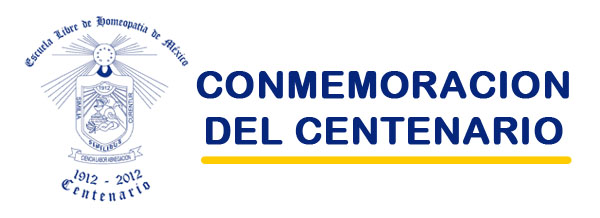

|

LA ESCUELA LIBRE DE HOMEOPATIA DE MEXICO CUMPLE 100 AÑOS DESDE SU FUNDACION. DURANTE TODO EL 2012 SE REALIZARAN DIFERENTES EVENTOS. LOS MÁS IMPORTANTES SON:
COMITÉ NACIONAL COMEMORATIVO DE LOS
FESTEJOS DEL CENTENARIO DE LA ELHM.
ECOS DE LA ESCUELA LIBRE DE HOMEOPATIA
Este texto de 328 páginas tamaño carta es una recopilación de diversos escritos, trabajos, documentos y hasta pinturas al oleo realizados por el fundador, su hermano y algunos ilustres egresados de la institución. Es una edición conmemorativa del primer siglo de la escuela y estará ya publicado a fines de enero del 2012.
CONCIERTO DE MUSICA CLASICA Y DEDICACION
DEL AUDITORIO DE LA ESCUELA
Se realizara el 10 de Abril del 2012, artistas, horario y programa por definir.
EXPOSICION HISTÓRICA
Se inaugurará el 2 de Julio del 2012 en las instalaciones de la escuela. Horario por definir.
CONGRESO DEL CENTENARIO
Se realizará un Curso Pre congreso el día 9 de Octubre del 2012 en el Auditorio de la Escuela y del 10 al 12 de Octubre el Congreso Internacional conmemorando los 100 años de la Fundación de la Escuela Libre de Homeopatia de México, con conferencistas invitados de Alemania, Argentina y Brasil así como destacados médicos Homeópatas Mexicanos.
NOCTÁMBULANTES
CONCURSO "ELABORANDO LAS MASCOTAS"
OTROS EVENTOS (POR DEFINIR)
|